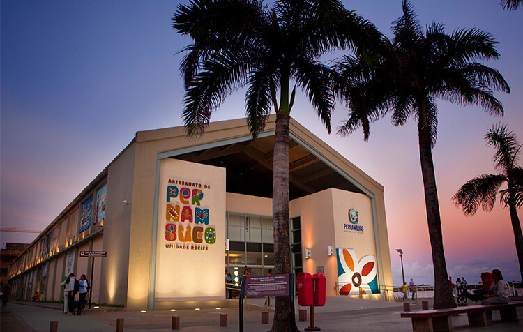

Conheça outros Pontos Turísticos de Recife Antigo
Recife Antigo exala cultura e grandes histórias, entre elas está o Centro de Artesanato de Pernambuco e o Cais do Sertão. Essa área também é ótima para os amantes da vida noturna.
Museu Cais do Sertão
O Cais do Sertão é um museu interativo que mostra a história e a cultura do povo Nordestino. Anteriormente o prédio era utilizado como armazém do porto. Seu funcionamento é de terça-sexta de 09:00-17:00 e sábado e domingo de 13:00 - 17:00.
Centro de Artesanato
O Centro de Artesanato é uma visita indispensável e encatadora. O espaço conta com mais de 16 mil peças produzidas por artesãos local. Seu funcionamento é de terça-sábado de 09:00-18:00 e domingo e feriado de 09:00 - 13:00.